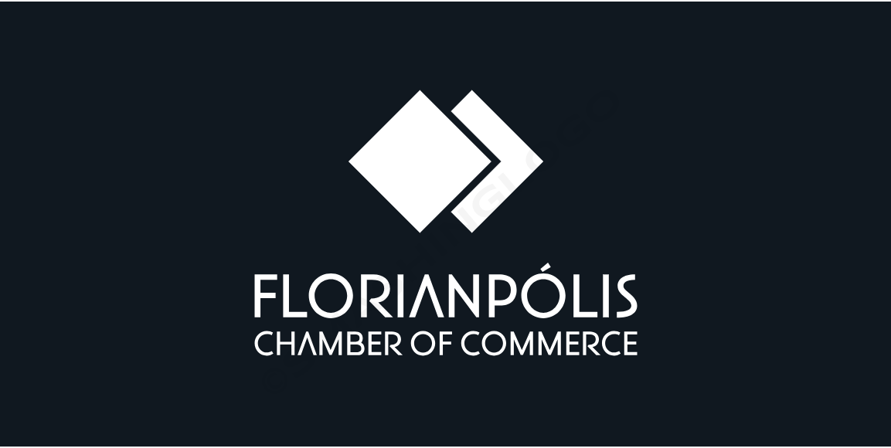

Overview
Purpose
The Florianopolis Chamber of Commerce website is your information and support hub for local businesses. We actively promote regional businesses by providing member listings, networking events, and resources for business growth. Additionally, we keep you informed about economic development in Florianopolis and public policies that may impact your business, helping you navigate the local business landscape with confidence.
Audience
We want to target The website will be created with some missions in mind: to serve local retailers, customers, entrepreneurs, and merchants alike.
Scenarios
- What is a chamber of commerce, and what is its role?
- How can I become a member of the chamber of commerce?
- What events and activities are being organized by the chamber of commerce?
- How can I participate in business networking events?
- How can I get in touch with the chamber of commerce?
- Where can I find the latest news and announcements from the chamber?
Branding
Website Logo
Style Guide
Color Palette
Palette URL:
https://coolors.co/420039-932f6d-e07be0-dcccff-f6f2ff| Primary | Secondary | Accent 1 | Accent 2 |
|---|---|---|---|
| [#0D1B2A] | [#1B263B] | [#415A77] | [#778DA9] |
Typography
Heading Font: Lato
Paragraph Font: Roboto
Normal paragraph example
The Florianopolis Chamber of Commerce website is your information and support hub for local businesses. We actively promote regional businesses by providing member listings, networking events, and resources for business growth. Additionally, we keep you informed about economic development in Florianopolis and public policies that may impact your business, helping you navigate the local business landscape with confidence.
Colored paragraph example
The Florianopolis Chamber of Commerce website is your information and support hub for local businesses. We actively promote regional businesses by providing member listings, networking events, and resources for business growth. Additionally, we keep you informed about economic development in Florianopolis and public policies that may impact your business, helping you navigate the local business landscape with confidence.
WireFrame